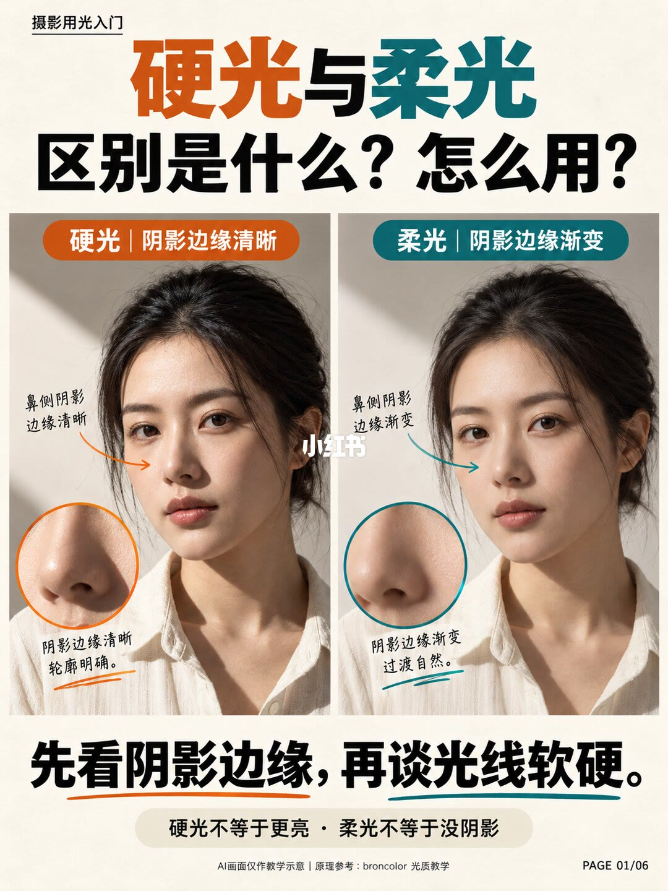
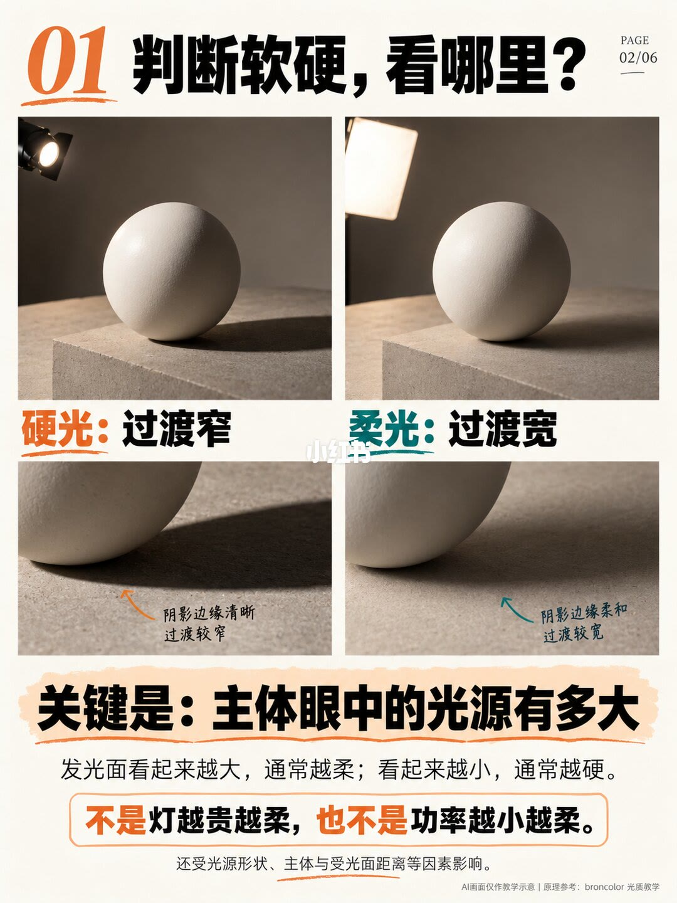
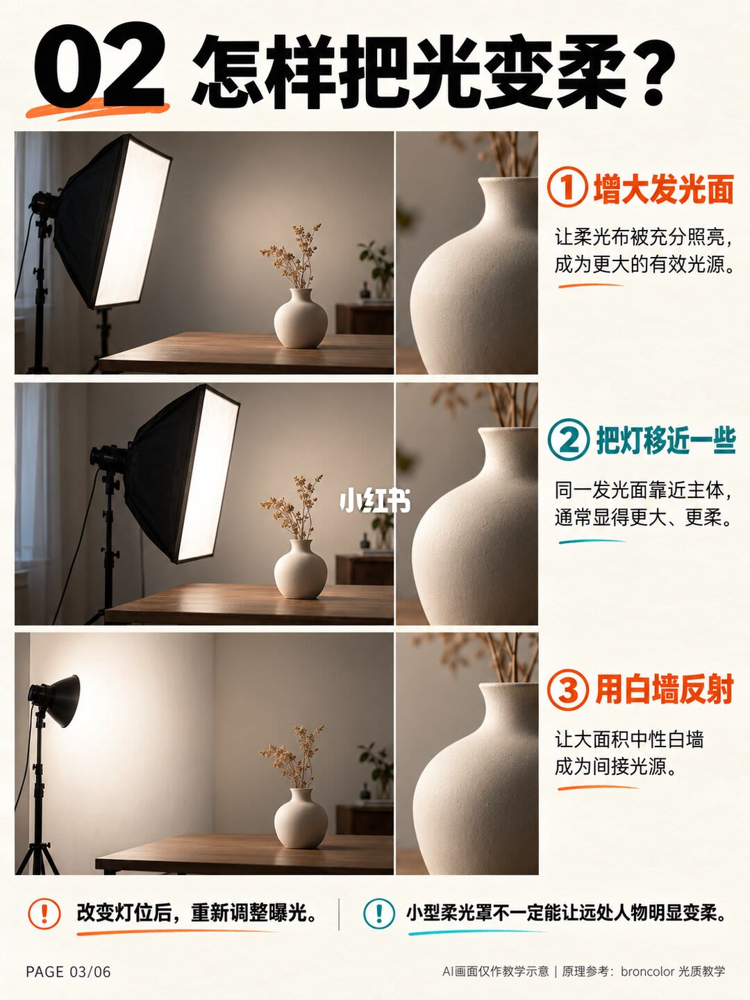
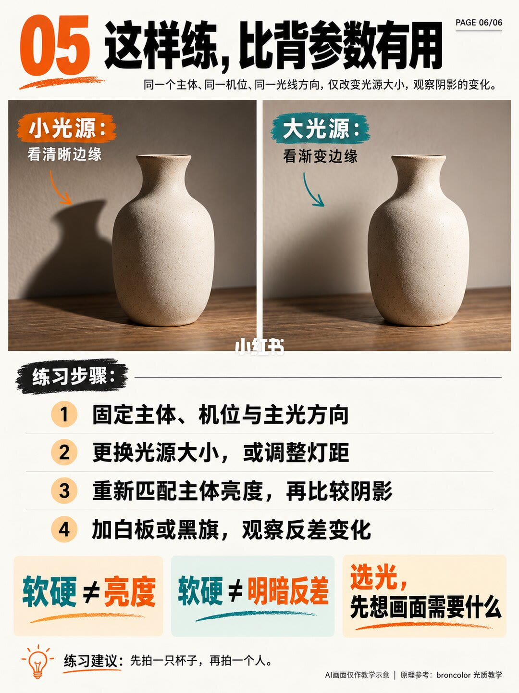

第 1 页：先看阴影边缘

1/6硬光阴影边缘清晰，柔光边缘渐变；硬光≠更亮，柔光≠没阴影。
Judge by shadow edge: hard=sharp, soft=gradual—not brightness or “no shadow.”
AI示意+broncolor光质教学参考。
第 2 页：判断看哪里

2/6判断软硬看过渡宽窄；关键是主体眼中光源有多大——不是灯越贵或功率越小越柔。
Relative source size to subject decides soft/hard—not lamp price or wattage.
还受光源形状、距离等影响。
第 3 页：怎样变柔

3/6变柔三招：增大发光面、把灯移近、白墙反射成间接光源；改灯位后重调曝光。
Soften: bigger surface, move closer, bounce off white wall—then re-expose.
小柔光罩对远处人物未必够柔。
第 4 页：硬光怎么用
4/6硬光：清晰投影塑形；侧光显纹理、影子构图、戏剧人像静物；暗部可用反光板补，补光≠把主光变柔。
Hard light: texture, shadow composition, drama; fill lowers contrast, doesn’t soften key.
应用是建议不是死规则。
第 5 页：柔光怎么用
5/6柔光：人像渐变阴影仍立体；产品大面积光源平顺高光；侧前方布光。柔光也可高反差——暗侧黑旗。
Soft for portraits/products; keep direction; black flag can deepen soft-light contrast.
不要一味照平。
第 6 页：练习法

6/6这样练：同主体机位方向，只改光源大小看阴影；软硬≠亮度≠反差。先拍杯子再拍人。
Drill: same subject/angle/direction, only change source size; soft≠bright≠contrast.
选光先想画面需要什么。
文末汇总
核心判断：软硬看阴影过渡；由主体视角的光源大小主导。柔化靠面/距/反射；硬光用投影与纹理；柔光可保留方向甚至用黑旗做高反差。
- 固定机位只改光源大小做对照
- 布柔光仍放侧前方
- 补光与柔化分开想
以上为原笔记图文观点整理，不是对该主题的全面定论。